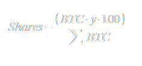

Mjollnircoin Shares
How your share is calculated
First, we calculate your investment rank (x) on scale of 0 to 100; Then we take your investment rank (x) and calculate the distribution coefficient (y). This formula will give the top investors a better coefficient:
Below is a plot of the formula:
Next, we calculate your shares:

Finally, we divide your shares by the total number of shares to get your percentage of the Mjollnircoin IPCO distribution.